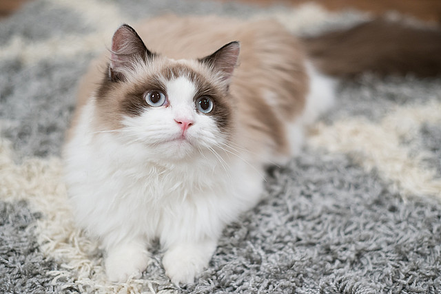

Ragdoll
Pochodzenie
Pochodzenie ragdolli jest bardzo dobrze udokumentowanie. Jest to rasa wyhodowana przez człowieka w latach 60. XX wieku, w amerykańskim stanie Kalifornia. U jej podstaw legła najprawdopodobniej jakaś naturalna mutacja. Jaka? Tego za bardzo nie wiadomo.
Charakter i zachowanie
Ragdoll jest kotem o spokojnym temperamencie, przyjacielskim i zrównoważonym. Ma nieco flegmatyczny, łagodny charakter. Nie jest specjalnie skoczny - woli spacerować po ziemi, niż wspinać się na meble. Mocno zżywa się z właścicielem, ciągle poszukuje z nim kontaktu i chętnie towarzyszy mu przez cały dzień, chodząc przy nodze jak pies. Nie bywa jednak zbyt natrętny, o swojej obecności przypomina jedynie cichym i delikatnym głosem.
Pielęgnacja
Aby ragdoll wyglądał ładnie, w zupełności wystarczy wyczesać go dokładnie raz w tygodniu, a od czasu do czasu wykąpać, używając specjalnych szamponów dla kotów. Doskonała kondycja wystawowa wymagać będzie nieco bardziej profesjonalnych zabiegów pielęgnacyjnych. Specjalistyczne kosmetyki do pielęgnacji kotów długowłosych są co prawda dość drogie, ale jeśli chcemy mieć doskonale przygotowanego do wystawy kota, należy się w nie zaopatrzyć.